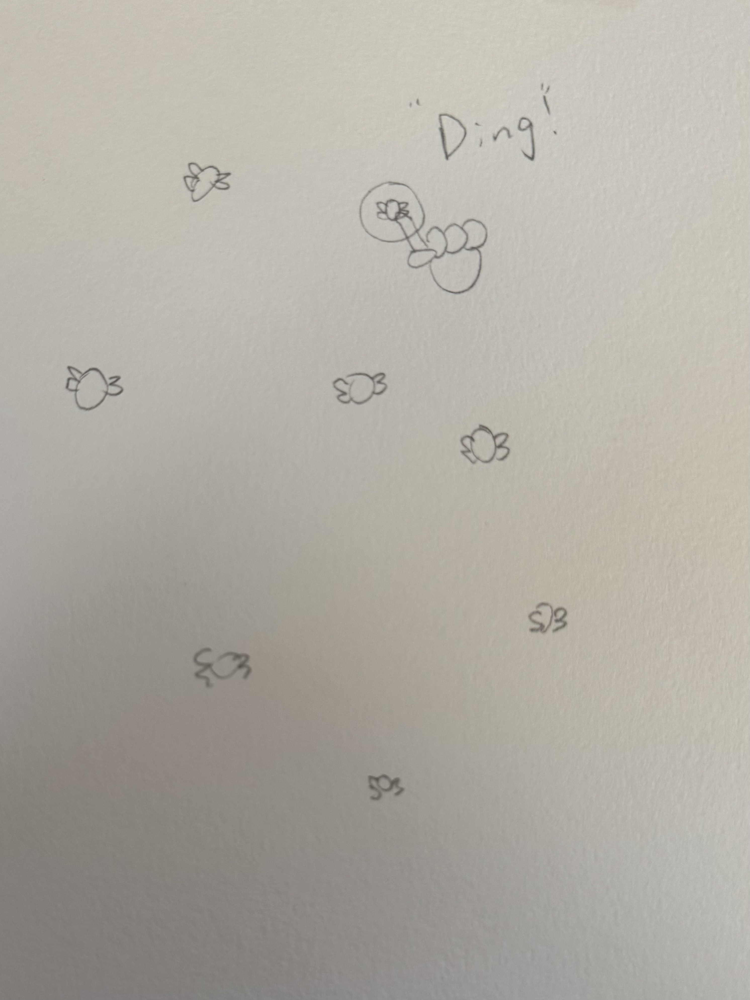

For my Week 10 project, I created an interactive audiovisual composition called Firefly Catcher.
Using ml5.js HandPose and a mirrored camera feed, the sketch tracks the user's index finger as a gesture cursor to catch glowing fireflies floating across the night sky.
To bridge vision and sound, each firefly is assigned a unique base pitch frequency using a p5.Oscillator.
When the finger catches a firefly, it triggers a soft musical chime note and an expanding sparkle ring that fades over time.
Through this experiment, moving in physical space directly shapes both the auditory landscape and visual light environment, creating a playful feedback loop between gesture and sound.
